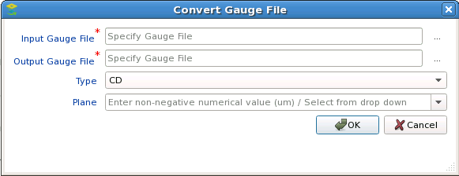

Gauge files,
which contain measurements of critical dimensions from a test chip,
are used to calibrate the mathematical model of the process. Standard
modelflow_v2 gauge files are automatically converted to Calibre
nmModelflow format.
Although conversion is automated when you
use the Load button, manual conversion means are
provided.
Procedure
- Open the Calibre nmModelflow
GUI (Litho > nmModelflow).
- Click the Gauges tab
to raise the gauge controls.
- Click the Convert button.
- In the Convert Gauge File
dialog box, click the Browse button (...)
to the right of the Input Gauge File field and navigate to your
modelflow_v2 gauge (.gg) file or super gauge
(.sgd) file.
Figure 2. Convert
Gauge File Wizard
- Set the name of the output
converted gauge file (which must end in .gg for
a gauge file or .sgd for a super gauge data
file, as appropriate).
- (Optional)
Use the Browse button (...) to the right of the Output Gauge File
field to set a destination directory; otherwise, the file is written
to the directory where you started Calibre WORKbench by default.
- In most
cases, you can use the default Type field setting of CD. However,
if you have a super gauge data file used with SRAF calibration (version
2), set the Type and Plane fields as follows:
Set Type SRAF, Plane BOTTOM —
Use this combination for SRAF gauges near the resist bottom (where
the exact plane value is a calibration parameter, initialized by
the -srafbotplane parameter).
Set Type SRAF, Plane TOP —
Use this combination for SRAF gauges near the resist top (where
the exact plane value is a calibration parameter, initialized by
the parameter -sraftopplane).
Set Type CD, Plane value —
Use this combination for CD gauges measured at a specified metrology
plane (value in um measured from the bottom of resist). This supports
the R3D model calibration flow using CD data measured at multiple metrology
planes.
Click OK to
convert the gauge file.
Results
The converted gauge file is created
in the specified directory and can now be loaded into the database.